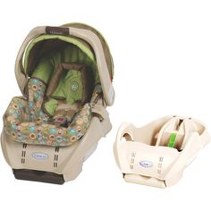
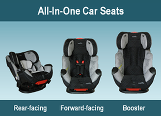

Rear-Facing Car Seats
Rear-Facing Car Seats
There are three types of rear-facing car seats:
- Infant Car Seat: are rear-facing only, easy to carry around and typically is installed on a car seat base that remains securely installed in the vehicle while the car seat is easily removed from the base, transported around and then returned to the bases when it's time to travel.
- Convertible Car Seat: can be installed in a rear-facing or foward-facing position and encourages keeping a child in the rear-facing position a little longer since it tends to accomodate multiple stages.
- All-in-one Seat: accomondates rear-facing, foward-facing and booster-style stages. Booster-style seats are described on the Booster Seat page.
All car seats manual should be checked for the individual manufacturer's guidlines.

